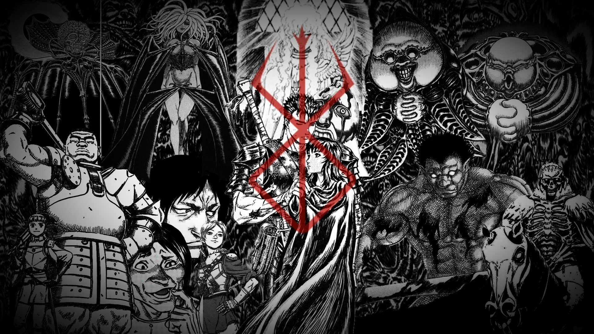

Beserk
September 28, 2022 by David
Beserk is an original manga written by Kentaro Miura which started in the year of 1989
and has continued to present even with the unfortunate death of the author in 2021.
The manga follows the protagonist by the name of "Guts" which was given by the guesome
manner in which he was born. The story follows this twisted hero on his journey fighting mercanaries
until it twists into a spiral of betrayal and our hero turns into what he tried his best to get rid of.
He starts going after strenght and power by any means to take down the friend that turned foe.
Thought the author has met his end at the young age of 54,
his legacy lives on as the series continues in his absence.